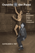
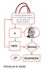

|
Pictures from a Drawer
Prison and the Art of Portraiture
Jackson, Bruce
192 pp • 7x10 • Spring 2009
paper 978-1-59213-949-1
cloth 978-1-59213-948-4 |
 |
Outside the Paint
When Basketball Ruled at the Chinese Playground
Yep, Kathleen S.
224 pp • 5.5x8.25 • Spring 2009
cloth 978-1-59213-942-2
|

|
Nature in Common?
Environmental Ethics and the Contested Foundations of Environmental Policy
Minteer, Ben A.
304 pp • 6x9 • Spring 2009
paper 978-1-59213-704-6
cloth 978-1-59213-703-9
|

|
Filling the Ark
Animal Welfare in Disasters
Irvine, Leslie
184 pp • 5.5x8.25 • Spring 2009
cloth 978-1-59213-1829-0 |

|
Demanding Respect
The Evolution of the American Comic Book
Lopes, Paul
256 pp • 6x9 • Spring 2009
paper 978-1-59213-443-4
cloth 978-1-59213-442-7 |

|
Rave Culture
The Alteration and Decline of a Philadelphia Music Scene
Anderson, Tammy L.
240 pp • 6x9 • Spring 2009
paper 978-1-59213-934-7
cloth 978-1-59213-933-0
|

|
Objectifying Measures
The Dominance of High-Stakes Testing and the Politics of Schooling
Johnson, Amanda Walker
224 pp • 5.5x8.25 • Spring 2009
paper 978-1-59213-906-4
cloth 978-1-59213-905-7 |

|
The Teacher's Attention
Why Our Kids Must and Can Get Smaller Schools and Classes
Delavan, Garrett
232 pp • 6x9 • Spring 2009
paper 978-1-59213-894-4
cloth 978-1-59213-893-7 |

|
The Unheard Voices
Community Organizations and Service Learning
edited by Stoecker, Randy, Elizabeth A. Tryon
224 pp • 5.5x8.25 • Spring 2009
paper 978-1-59213-995-8
cloth 978-1-59213-994-1
|
|
Ladies and Gents
Public Toilets and Gender
edited by Gershenson, Olga, Barbara Penner
240 pp • 6x9 • Spring 2009
paper 978-1-59213-940-8
cloth 978-1-59213-939-2
|
|
The End of White World Supremacy
Black Internationalism and the Problem of the Color Line
Bush, Roderick
256 pp • 6x9 • Spring 2009
paper 978-1-59213-573-8
cloth 978-1-59213-572-1
|

|
The Transnational Politics of Asian Americans
Foreword by Don Nakanishi
edited by Collet, Christian, Pei-te Lien
240 pp • 6x9 • Spring 2009
paper 978-1-59213-861-6
cloth 978-1-59213-860-9 |

|
Contemporary Chinese America
Immigration, Ethnicity, and Community Transformation
Zhou, Min
312 pp • 6x9 • Spring 2009
paper 978-1-59213-858-6
cloth 978-1-59213-857-9 |

|
Live Wire
Women and Brotherhood in the Electrical Industry
Moccio, Francine A.
272 pp • 6x9 • Spring 2009
paper 978-1-59213-738-1
cloth 978-1-59213-737-4 |
 |
A New Brand of Business
Charles Coolidge Parlin, Curtis Publishing Company, and the Origins of Market Research
Ward, Douglas B.
240 pp • 5.5x8.25 • Spring 2009
cloth 978-1-43990-015-4
|
|
Música Norteña
Mexican Migrants Creating a Nation Between Nations
Ragland, Cathy
256 pp • 6x9 • Spring 2009
paper 978-1-59213-747-3
cloth 978-1-59213-746-6 |

|
Economies of Desire
Sex and Tourism in Cuba and the Dominican Republic
Cabezas, Amalia L.
232 pp • 5.5x8.25 • Spring 2009
paper 978-1-59213-750-3
cloth 978-1-59213-749-7 |

|
The Cubans of Union City
Immigrants and Exiles in a New Jersey Community
Prieto, Yolanda
224 pp • 6x9 • Spring 2009
paper 978-1-59213-300-0
cloth 978-1-59213-299-7 |

|
Creolizing Contradance in the Caribbean
Manuel, Peter
288 pp • 6x9 • Spring 2009
cloth 978-1-59213-734-3 |

|
The Dance of Politics
Gender, Performance, and Democratization in Malawi
Gilman, Lisa
272 pp • 6x9 • Spring 2009
cloth 978-1-59213-985-9 |
|
Runaway Romances
Hollywood's Poswar Tour of Europe
Shandley, Robert R.
240 pp • 6x9 • Spring 2009
cloth 978-1-59213-945-3 |
|
Mobilizing Science
Movements, Participation, and the Remaking of Knowledge
McCormick, Sabrina
208 pp • 5.5x8.25 • Spring 2009
cloth 978-1-43990-009-3 |

|
Material Law
A Jurisprudence of What's Real
Brigham, John
240 pp • 6x9 • Spring 2009
cloth 978-1-59213-964-4 |

|
Tyranny of the Minority
The Subconstituency Politics Theory of Representation
Bishin, Benjamin G.
216 pp • 6x9 • Fall 2000
cloth 978-1-59213-658-2 |